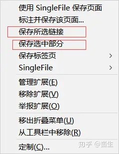
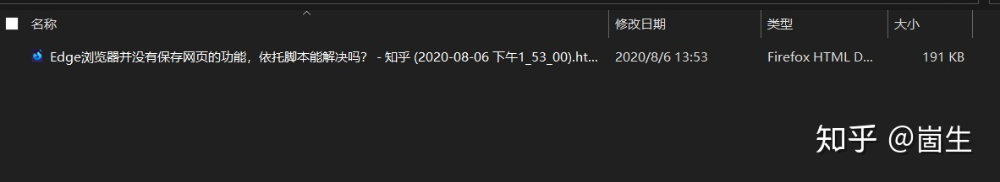
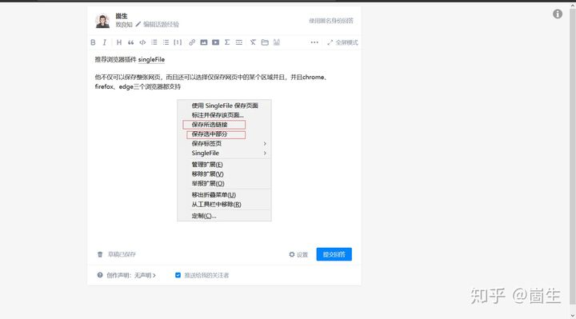

文章分享到的地方：
Edge浏览器并没有保存网页的功能，依托脚本能解决吗？ - 崮生的回答 - 知乎
如何保存网页，才能连图片也保存下来？什么格式？ - 崮生的回答 - 知乎
推荐浏览器插件
singleFile
他不仅可以保存整张网页，而且还可以选择仅保存网页中的某个区域，并且chrome、firefox、edge三个浏览器都支持
并且他仅生成一个单文件而非浏览器内置的保存功能那样还有一个文件夹


这是打开之后的效果（我只选中了当前页面的编辑器部分）：
